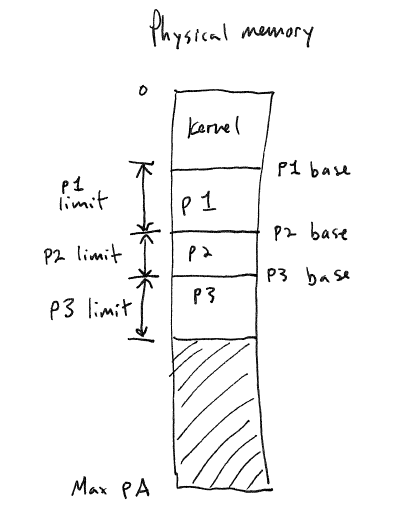
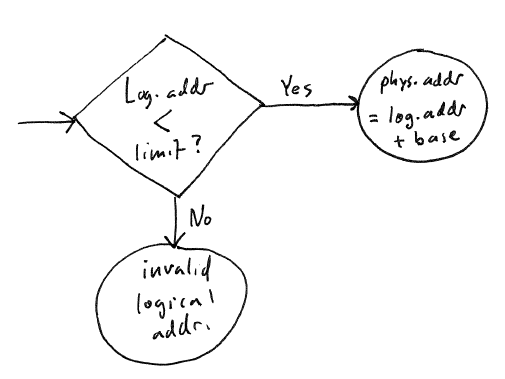
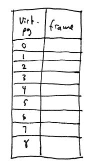
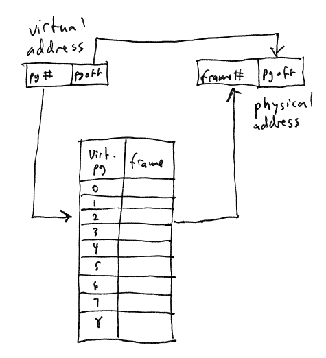

CS 420 - Lecture 15
[Finish up deadlock avoidance]
Characteristics of main memory,
a.k.a. RAM:
all code and data is stored in RAM (for
both the OS and the user processes)
may be accessed fairly quickly: slower
than CPU registers but many thousands of times faster than disk
volatile: turn of computer and contents
of main memory go away
each byte of main memory has an physical address: the entire set of
physical addresses is the physical
address space
Main memory is one of the most important resources that the OS
kernel must manage. Managing memory boils down to the problem of
dividing up memory and allocating it to the OS and user processes as
needed.
Issue: memory protection. A user
process should only be able to access its own memory. It should
(ideally) never be able to access the memory of another process, or the
OS kernel, unless specifically allowed to.
Memory protection requires hardware support in the CPU.
Although it is possible to design an OS without hardware-enforced
memory protection, it is not desirable, because a misbehaving user
process can wreak all sorts of havoc on other processes and the OS
kernel.
The simplest hardware memory protection mechanism is segmentation. Each user
process is allocated a contiguous chunk of main memory:

The CPU has two special registers: the base register and the limit register. Just before
switching control of the CPU to a user process, the kernel stores the
base address of the user process in the base register, and the size of
the user process's memory chunk into the limit register.
The base and limit registers thus define a logical address space for
the user process. Each memory reference that the process makes is
translated to a physical
address according to the following procedure:

Addresses generated by the program are logical addresses. As far as
the process is concerned, it is executing in a logical address space
starting at logical address 0, and ending at logical address (limit-1).
Note that there is a state in this diagram marked "invalid logical
address". When this state occurs, it means that the process has
tried to access memory outside its own logical address space. The
CPU will generate a software interrupt that will return control to the
OS kernel, which will (most likely) terminate the process.
Note that whenever control switches from a user process to the
kernel, e.g. because of a system call, hardware device interrupt, or
any other kind of trap---the base register is set to 0 and the limit
register is set to the size of the physical address space. In
this way, the OS kernel can always access any address in physical
memory.
One nice property of segmentation is that when you write a program,
you do not need to know where in memory that program will be loaded
when it is actually executed. As long as the base register
reflects where the program is loaded, the program will have the
illusion that it is running in its own private logical address space.
A disadvantage of segmentation is that the memory allocated for a
process must be contiguous. If a process requires more memory
that it has currently been allocated, then it must be moved to a part
of main memory where a larger contiguous chunk is available.
A much more flexible scheme for hardware-enforced memory management
is paging.
Memory is divided up into small chunks called pages. On x86 CPUs, pages are
4K in size (where 1K = 4096 bytes). The start address of each
page must be an even multiple of the page size.
A physical memory page is sometimes called a frame.
Paging allows the creation of virtual
address spaces. Conceptually, a virtual address space is a
table specifying for each viritual page
1. which physical page (frame) actually
stores the contents of that physical page, or
2. that the virtual page is not mapped
(meaning that "nothing is there")
3. that the data of the virtual page is
currently stored on disk
The data structures that define a virtual address space are the page tables.
Example

When paging is used, each virtual address is divided into two parts:
the page number, and the page offset within the page.
The hardware memory management unit, or MMU, translates the page
number to a physical frame number by looking up the entry in the page
tables. The frame number and the page offset are then combined to
form a physical address.

This system works because the page size is a multiple of two.
For example, on x86 CPUs, the page size is 4096, or 2^12 bytes.
That means the 12 low-order bits of a 32 bit virtual address are the
page offset, and the high-order 20 bits are the page number.
Paging gives the OS kernel complete flexibility to allocate memory
to processes. When a process needs some memory, the OS kernel
simply finds an available frame, and maps it into the process's page
tables.
Paging also allows the OS kernel to give memory to a process
lazily. THe process starts out with a virtual address space where
none of the entries in the page tables refer to a valid physical
address. When a process tries to access a virtual page for the
first time, the MMU causes an exception called a page fault, which indicates that an
unmapped virtual address was accessed. To handle the page fault,
the OS kernel allocates a frame, maps it into the process's page
tables, and restarts the process so that the instruction that caused
the fault is re-executed.
Paging achieves memory protection because there is no way for a
process to access physical pages that are not mapped into its page
tables.
We have discussed the concept of virtual memory: using the disk as
second-level storage for physical memory, allowing processes to
continue running even when they require more memory than is actually
present as RAM.
Assume that the pages tables defining a virtual address space are
represented by a single table, with one entry for each virtual/physical
page pair.
The index values correspond to virtual page numbers, so we don't need
to store the virtual page number in the entries. However, any
virtual page can map to an arbitrary frame, so we do need to store
frame numbers in the table.
In reality, we will want to be able to
store a bit of extra information in each entry, but the main thing is
the frame number.
We know that there are 2^20 = 1,048,576 virtual page numbers in a
physical address space, assuming 32 bit addresses and 4K pages, like
the x86. Each entry in the table needs to store a frame number,
and assuming a 32 bit physical address space, there will be 2^20
possible frame numbers. Assuming that we are going to word-align
each entry, we need 4 byte for each table entry (with 12 bits in each
entry being available for other purposes). So, the entire table
is 4 * 2^20 = 2^22 = 4,194,304 bytes in size.
If we have to allocate a 4 MB data structure for each virtual
address space, that's going to chew up a lot of our main memory.
Solution: hierarchical page tables. [Next time.]